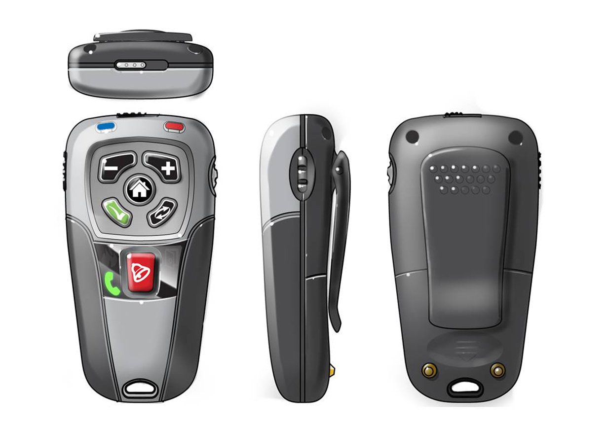

Project management

A design program starts with planning and due diligence. We define expectations and responsibilities, set communication procedures and schedules, and ask the questions that make the difference between a delay and a job done on time.
You get progress updates at regular intervals, so you know the status of the project at any time. Our methodology tracks milestones to keep the work on task and on budget, for small companies and Fortune 500 companies alike.
- Planning and initial due diligence
- Responsibilities and expectations
- Communication procedures and schedules
- Milestone and progress tracking
- Regular progress updates